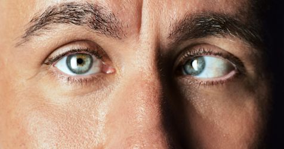

Strabismus

SYMPTOMS:
Amblyopia is not always obvious. The condition often goes undetected until a child has an eye test. So every child should have early, regular vision screening.
You may notice symptoms. A child with amblyopia may:
-
Bump into things on a particular side a lot.
-
Experience a large difference in nearsightedness or farsightedness between the two eyes.
-
Favor one side of the body.
-
Have crossed eyes.
-
Have a droopy eyelid.
-
Shut one eye or squint a lot.
-
Frequently tilt their head to one side.
CAUSES
conditions associated with strabismus include:
-
Uncorrected refractive errors
-
Poor vision in one eye
-
Cerebral palsy
-
Down syndrome (20-60% of these patients are affected)
-
Hydrocephalus (a congenital disease that results in a buildup of fluid in the brain)
Brain tumors
-
Stroke (the leading cause of strabismus in adults)
-
Head injuries, which can damage the area of the brain responsible for control of eye movement, the nerves that control eye movement, and the eye muscles
-
Neurological (nervous system) problems
Graves' disease (overproduction of thyroid hormone)
DIAGNOSIS
The exam may include the following:
- Patient history (to determine the symptoms the patient is having, family history, general health problems, medications being used and any other possible causes of symptoms)
-
Visual acuity (reading letters from an eye chart, or examining young children’s visual behavior)
-
Refraction (checking the eyes with a series of corrective lenses to measure how they focus light). Children do not have to be old enough to give verbal feedback when checking for glasses.
-
Alignment and focus tests
-
Examination after dilation (widening) of the pupils to determine the health of internal eye structures
TREATMENTS
Treatment options include the following:
- Eyeglasses or contact lenses: Used in patients with uncorrected refractive errors. With corrective lenses, the eyes will need less focusing effort and may remain straight.
-
Prism lenses: Special lenses that can bend light entering the eye and help reduce the amount of turning the eye must do to look at objects.
-
Orthoptics (eye exercises): May work on some types of strabismus, especially convergence insufficiency (a form of exotropia).
-
Medications: Eye drops or ointments. Also, injections of botulinum toxin type A (such as Botox) can weaken an overactive eye muscle. These treatments may be used with, or in place of, surgery, depending on the patient's situation.
-
Patching: To treat amblyopia (lazy eye), if the patient has it at the same time as strabismus. The improvement of vision may also improve control of eye misalignment.
-
Eye muscle surgery: Surgery changes the length or position of eye muscles so that the eyes are aligned correctly. This is performed under general anesthesia with dissolvable stitches. Sometimes adults are offered adjustable strabismus surgery, where the eye muscle positions are adjusted after surgery.